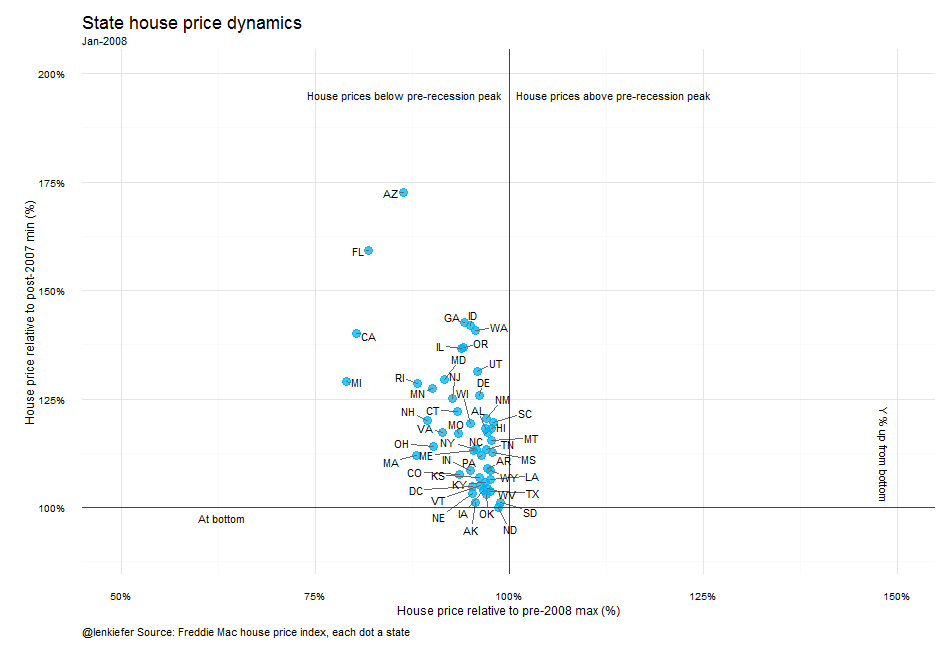

THIS IS PART TWO of my series of meditations on house prices. In our earlier post we covered the data collection, wrangling, and some useful transformations.
Recap
For convenience, the data files you’ll need to replicate these results are right here:
And the data preparation code is here in the previous post
Now we’ll need to load and prepare some data. We’ll do this using the data.table package to set up our data.
Let’s take a peek at the data:
#State Data
head(statedata, n=13L)## Cycle state hpi year month date type pmax pmin
## 1: 1975M01 AK 34.43 1975 1 1975-01-01 State 161.63 152.97
## 2: 1975M02 AK 34.94 1975 2 1975-02-01 State 161.63 152.97
## 3: 1975M03 AK 35.46 1975 3 1975-03-01 State 161.63 152.97
## 4: 1975M04 AK 36.01 1975 4 1975-04-01 State 161.63 152.97
## 5: 1975M05 AK 36.60 1975 5 1975-05-01 State 161.63 152.97
## 6: 1975M06 AK 37.24 1975 6 1975-06-01 State 161.63 152.97
## 7: 1975M07 AK 37.88 1975 7 1975-07-01 State 161.63 152.97
## 8: 1975M08 AK 38.46 1975 8 1975-08-01 State 161.63 152.97
## 9: 1975M09 AK 38.97 1975 9 1975-09-01 State 161.63 152.97
## 10: 1975M10 AK 39.43 1975 10 1975-10-01 State 161.63 152.97
## 11: 1975M11 AK 39.84 1975 11 1975-11-01 State 161.63 152.97
## 12: 1975M12 AK 40.17 1975 12 1975-12-01 State 161.63 152.97
## 13: 1976M01 AK 40.44 1976 1 1976-01-01 State 161.63 152.97
## hpa hpa12 hpa3 hpi12 hpi12min hpi12max
## 1: NA NA NA NA NA NA
## 2: 0.19297278 NA NA NA NA NA
## 3: 0.19396052 NA NA NA NA NA
## 4: 0.20285335 NA NA NA NA NA
## 5: 0.21533378 NA NA NA NA NA
## 6: 0.23124093 NA NA NA NA NA
## 7: 0.22688421 NA NA NA NA NA
## 8: 0.20002893 NA NA NA NA NA
## 9: 0.17126054 NA NA NA NA NA
## 10: 0.15121504 NA NA NA NA NA
## 11: 0.13216737 NA NA NA NA NA
## 12: 0.10405326 NA NA NA 34.43 40.17
## 13: 0.08370676 0.1745571 0.1965873 34.43 34.94 40.44Above is the first 13 rows of the state data. The key variable is hpi, which tracks the house price index (normalized so that December 2000=100). We computed differences, and I also added pmin and pmax which compute the minimum of hpi after the year 2007 by state and the maximum of hpi before the year 2008 by state respectively. I happened to have computed these values in Excel and merged them back on our data before I saved it as a text file. But we could pretty easily replicate these calculations in R.
For today’s exercise we’ll just need the state, year, month, date, and hpi variables (hpi, hpi12min, hpi12max, and hpa12).
What are these data?
Remember these data are the Freddie Mac House Price Index for the U.S., 50 states plus D.C. and over 300 metro areas. You can read technical documentation pdf and a FAQ, but the basic explanation-from the FAQ-is:
How can I interpret index values?
Index values represent the value of single-family housing, relative to the last month in the series. To calculate the growth rate between any two months, simply apply the formula: (I2/I1)-1, where I1 is the index value of the first month and I2 is the index value of the second month.
Now that we have the data in hand we can start to make some visualizations.
On animation
I’ve been using the animation package to make the gifs. In order for this package to work, you’ll need to have one of ImageMagick (http://imagemagick.org) or GraphicsMagick (http://www.graphicsmagick.org) or LyX (http://www.lyx.org) to run the programs.
Meditation 1: small multiple line plots
Let’s start by constructing a small multiple line plot, where we plot the FMHPI for each state in a separate small plot, sort of like a sparkline. As we have 50 states, we’ll exclude D.C. and the US from this visualization so that we have nice number to work with in the panel plot.
#set a maximum date with year and month
yy<-2016 #year
mm<-3 #month- march is latest available
#Create the plot, exlude if state = 'US' or state = 'DC', and year < 2000:
g<-
ggplot(data=statedata[state != "US" & state !="DC" & year>1999 & year<=yy], aes(x=date,y=hpi))+
#set theme
theme_minimal()+
#set dates,
#the axis will be tight so we'll only show the year every 4 years and only print the last 2 digits
scale_x_date(labels= date_format("%y"),date_breaks="4 year",
limits = as.Date(c('2000-01-01','2016-03-30'))) +
#set y axis, I prefer a log axis for indices like this
scale_y_log10(limits=c(70,350), breaks=c(75,100,125,150,200,250,350))+
#plot data with black line
geom_line(color="black") +
#add a marker at teh end
geom_point(data=statedata[state !='US' & state != "DC" & year==yy & month==mm], color="red", alpha=0.7)+
#use the facet feature to plot each state as it's own small plot
facet_wrap(~state, ncol=10) +
# add a horiztonal line at the last data point, helpufl to compare to prior peak
geom_hline(data = statedata[year==yy & month==mm& state !="US" & state !="DC"], aes(yintercept = hpi), linetype=2,alpha=0.8)+
#modify plot features
theme(plot.title=element_text(face="bold",size=12))+
theme(plot.caption=element_text(hjust=0))+
xlab("")+ylab("House price index, log scale")+
#create a subtitle that prints the last date, useful later
labs(caption="@lenkiefer Source: Freddie Mac House Price Index (Dec 2000 = 100, NSA)",
subtitle=paste(as.character(statedata[year==yy & month==mm & state=="US"]$date,format="%b-%Y")),
title="State house price trends")
g
Depending on your monitor size, you might need to zoom out to see the figure all at once. However, you can compress the graphic to a fairly small size, and still get the main points:

By comparing the red dot and dotted line to recent history you can see which states are above their pre-recession peaks and at an all-time high.
Add some animation
Adding some animation might help us absorb the huge amount of information in the charts. What we’re going to do is take the same sparkline, and repeat it several times, building up each state through time. The code below constructs this graph. And you’ll see that the code is not much more than the code above.
oopt = ani.options(interval = 0.25)
saveGIF({for (yy in 2000:2016) {
mm<-12
if (yy==2016) {mm<-3}
g<-
#When we run the data we only use the data up to year yy
ggplot(data=statedata[state != "US" & state !="DC" & year>1999 & year<=yy], aes(x=date,y=hpi))+
theme_minimal()+
scale_y_log10(limits=c(70,350), breaks=c(75,100,125,150,200,250,350))+
geom_point(data=statedata[state !='US' & state != "DC" & year==yy & month==mm], color="red", alpha=0.7)+
scale_x_date(labels= date_format("%y"),date_breaks="4 year",
limits = as.Date(c('2000-01-01','2016-03-30'))) +
geom_line(color="black") + facet_wrap(~state, ncol=10) +
geom_hline(data = statedata[year==yy & month==mm& state !="US" & state !="DC"], aes(yintercept = hpi), linetype=2,alpha=0.8)+
theme(plot.title=element_text(face="bold",size=12))+
theme(plot.caption=element_text(hjust=0))+
xlab("")+ylab("House price index, log scale")+
labs(caption="@lenkiefer Source: Freddie Mac House Price Index (Dec 2000 = 100, NSA)",
#now the subtitle will allow us to print the last year plotted
subtitle=paste(as.character(statedata[year==yy & month==mm & state=="US"]$date,format="%b-%Y")),
title="State house price trends")
print(g)
ani.pause()
}
for (i2 in 1:2) {
print(g)
ani.pause()
}
},movie.name="sparkline.gif",ani.width = 800, ani.height = 700)
This code simply loops through years and creates a version of the plot and then compiles it into an animated gif. I originally posted this gif to Twitter and they have a 5MB limit on gifs so I had to reduce the number of images, skipping 12 months at a time. You can modify the code to loop through each month to create the plot if you have no such space restriction.
Meditation 2: dot plot
The time series sparklines provide a lot of information. Perhaps too much, particularly for an animated gif.
Let’s also construct a dot plot. The idea is to plot a single month’s value of the index for each state as a dot on the horizontal x axis, and use the vertical axis to display each state. This way, you can compare the relative position of each state. We’ll also add some additional features.
First the code and plot:
g<-
ggplot(data=statedata[(year==yy) & month==mm & state !="DC" & state !="US"], aes(x=hpi, y=state, label=state,color=hpa12))+
geom_text(nudge_x = 0.025) +
geom_point()+scale_x_log10(limits=c(70,350), breaks=c(70,100,150,250,350))+
geom_segment(aes(xend=hpi12min,x=hpi12max,y=state,yend=state),alpha=0.7)+
theme_minimal() +
scale_colour_gradient(low="red",high="blue",name = "12-month HPA",labels = percent)+
labs(y="State", x="House price index (log scale, Dec 2000 =100, NSA)",
title="State house price dynamics",
subtitle=paste(as.character(statedata[year==yy & month==mm & state=="US"]$date,format="%b-%Y")),
caption="@lenkiefer Source: Freddie Mac house price index, each dot a state, lines trailing 12-month min-max")+
theme(plot.title=element_text(size=18))+
theme(plot.caption=element_text(hjust=0,vjust=1,margin=margin(t=10)))+
theme(plot.margin=unit(c(0.25,0.25,0.25,0.25),"cm"))+
theme(legend.justification=c(0,0), legend.position=c(.8,.75))
g
Each dot corresponds to the house price index value for an individual state in March of 2016. I’ve also added a “tail” that is a line segment stretching from the rolling 12-month minimum to the rolling 12-month maximum. When the index is up (down) over the past year then the dot will be at the right (left) end of the line. The length of the line helps us compare relative movements in different states. The log scale is important here so that we’re comparing percentage changes in indices, which are meaningful, and not total change in index points, which are not meaningful.
I’ve also added a gradient color scale between red and blue that denotes the percentage change in house prices over the past year. This color is slightly redundant as the length of the segment almost perfectly correlates with this measure. Still, by scanning the chart the bluest dot and tail is the fastest growing, and the reddest will be the slowest (or most negative).
Adding animation
This chart is enhanced by adding animations I think. The time sequence of the gif allows us to trace the history of house prices. Watching the line segements increase and decrease in length gives you a sense of the trajectory of house prices for that state. Comparisons acrosss states are also easier in this chart.
oopt = ani.options(interval = 0.2)
saveGIF({for (yy in 2000:2016) for(mm in seq(1,12,1)) { {
if (yy==2016) {mm<-3}
g<-
ggplot(data=statedata[(year==yy) & month==mm & state !="DC" & state !="US"], aes(x=hpi, y=state, label=state,color=hpa12))+
geom_text(nudge_x = 0.025) +
geom_point()+scale_x_log10(limits=c(70,350), breaks=c(70,100,150,250,350))+
geom_segment(aes(xend=hpi12min,x=hpi12max,y=state,yend=state),alpha=0.7)+
theme_minimal() +
#scale_colour_gradient2(low="red",mid="gray", high="blue")+
#scale_colour_gradient2(low="red",mid="#00B0F0",high="blue",limits=c(-.7,.7),name = "12-month HPA",labels = percent)+
scale_colour_gradient(low="red",high="blue",name = "12-month HPA",labels = percent)+
labs(y="State", x="House price index (log scale, Dec 2000 =100, NSA)",
title="State house price dynamics",
subtitle=paste(as.character(statedata[year==yy & month==mm & state=="US"]$date,format="%b-%Y")),
caption="@lenkiefer Source: Freddie Mac house price index, each dot a state, lines trailing 12-month min-max")+
theme(plot.title=element_text(size=18))+
theme(plot.caption=element_text(hjust=0,vjust=1,margin=margin(t=10)))+
theme(plot.margin=unit(c(0.25,0.25,0.25,0.25),"cm"))+
#theme(legend.position="bottom")
theme(legend.justification=c(0,0), legend.position=c(.8,.75))
print(g)
ani.pause()
}
}
for (i2 in 1:2) {print(g)
ani.pause() }
},movie.name="redbluedot.gif",ani.width = 600, ani.height = 750)
There are some features of this chart (the changing meaning of the scales) that from a data science perspective are probably not recommended. Still, I like this chart. I think you really get a feeling of momentum that is so important in housing markets. The shifting colors make decoding the specific percent changes with color difficult, but the importance of colors is really to say which state is fastest and slowest. As a state comes on strong, they shift from red to blue.
Future meditations
That’s enough R for this post. I’ve got other meditations (we still haven’t used the metro data yet) to consider, like this one:

We’ll go over this one, and maybe something else, in my next post.